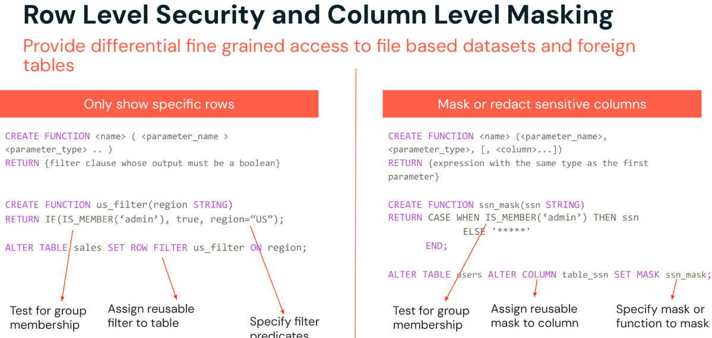

Section 7 · Governance and Security · Quelle: Kurs 6, DP 1.1
Grobgranulare ACLs auf Tabellenebene reichen oft nicht aus: Häufig soll nur ein Teil der Zeilen sichtbar sein (z. B. nur Daten der eigenen Region) oder eine einzelne Spalte je nach Nutzergruppe unterschiedlich dargestellt werden (z. B. eine Sozialversicherungsnummer nur für Berechtigte im Klartext). Databricks bietet dafür zwei Wege: den klassischen Ansatz über Dynamic Views und den moderneren, direkt auf der Tabelle ansetzenden Ansatz mit Row Filters und Column Masks.
Eine Dynamic View ist eine ganz normale SQL-View, die zusätzlich Funktionen wie session_user() oder is_account_group_member() nutzt, um ihr Ergebnis abhängig vom abfragenden Nutzer zu verändern. (Die ältere Funktion is_member() taucht in älteren Beispielen noch auf, ist aber ein Hive-Metastore-Relikt und sollte für Unity-Catalog-Tabellen nicht mehr verwendet werden – session_user() ist die aktuell empfohlene Alternative.) Spalten werden dabei per CASE-Ausdruck redigiert, Zeilen per WHERE-Klausel gefiltert.
CREATE OR REPLACE VIEW customers_gold_dynamic_view AS
SELECT
CASE WHEN -- customer_id nur für Supervisors im Klartext
is_account_group_member('supervisors') THEN customer_id
ELSE 9999999
END AS customer_id,
state,
avg(units_purchased) as average_units_purchased,
loyalty_segment
FROM customers_silver
WHERE
CASE WHEN -- Nicht-Supervisors sehen nur loyalty_segment < 3
is_account_group_member('supervisors') THEN TRUE
ELSE loyalty_segment < 3
END
GROUP BY customer_id, state, loyalty_segment
ORDER BY customer_id;
Wichtig zu verstehen: Der Eigentümer der View benötigt selbst keine Rechte auf customers_silver, um die View bereitzustellen – entscheidend ist, dass der View-Eigentümer Zugriff auf die Basistabelle hat. Andere Nutzer greifen ausschließlich über die View zu und sehen nur das, was die View-Definition zulässt. Der Nachteil dieses Ansatzes: Für jede unterschiedliche Sicht auf dieselben Daten muss eine eigene View angelegt und gepflegt werden, was bei vielen Tabellen schnell unübersichtlich wird.
Seit 2024 lassen sich Zeilenfilter und Spaltenmaskierungen direkt an die Tabelle selbst anhängen – ganz ohne zusätzliches View-Objekt. Row Filters und Column Masks werden als SQL-User-Defined-Functions (UDFs) definiert (Python- und Scala-UDFs sind ebenfalls möglich, müssen dafür aber in eine SQL-UDF eingebettet werden) und per ALTER TABLE aktiviert.

Ein Row Filter ist eine UDF, die für jede Zeile TRUE oder FALSE zurückgibt; nur Zeilen mit TRUE werden angezeigt. Jede Tabelle kann höchstens einen Row Filter besitzen, der aber beliebig viele Spalten als Parameter binden darf.
-- 1. UDF definieren
CREATE OR REPLACE FUNCTION loyalty_row_filter(loyalty_segment STRING)
RETURNS BOOLEAN
RETURN IF(is_account_group_member('supervisors'), true, loyalty_segment < 3);
-- 2. UDF an die Tabelle binden
ALTER TABLE customers_silver_with_row_filter_and_column_masks
SET ROW FILTER loyalty_row_filter ON (loyalty_segment);
-- 3. Aktivierte Filter prüfen
SELECT *
FROM information_schema.row_filters
WHERE table_name = 'customers_silver_with_row_filter_and_column_masks';
Eine Column Mask ist eine UDF, die bei jeder Abfrage anstelle des Originalwerts ausgewertet wird. Damit lassen sich Werte vollständig redigieren (wie im Beispiel) oder auch nur teilweise unkenntlich machen – etwa nur die letzten vier Ziffern einer Kontonummer anzeigen.
-- 1. UDF definieren
CREATE OR REPLACE FUNCTION redact_customer_id(customer_id BIGINT)
RETURN CASE WHEN is_account_group_member('supervisors')
THEN customer_id
ELSE 9999999
END;
-- 2. UDF an eine Spalte binden
ALTER TABLE customers_silver_with_row_filter_and_column_masks
ALTER COLUMN customer_id
SET MASK redact_customer_id;
-- 3. Ergebnis: Zeilenfilter und Spaltenmaskierung greifen gemeinsam
SELECT *
FROM customers_silver_with_row_filter_and_column_masks
ORDER BY loyalty_segment DESC
LIMIT 10;
-- customer_id zeigt 9999999, nur loyalty_segment < 3 ist sichtbar
| Kriterium | Dynamic Views | Row Filters / Column Masks |
|---|---|---|
| Zusätzliches Objekt nötig? | Ja – eine View pro Anwendungsfall | Nein – wird direkt an die Tabelle angehängt |
| Pflegeaufwand bei vielen Varianten | Hoch (viele Views) | Gering (eine UDF, mehrfach wiederverwendbar) |
| Gilt automatisch für alle Abfragen der Tabelle | Nein, nur für Abfragen über die View | Ja, unabhängig vom Zugriffsweg |
| Granularität | Zeilen und Spalten kombinierbar | Ein Row Filter + beliebig viele Column Masks je Tabelle |
Sowohl Dynamic Views als auch klassische Row Filters/Column Masks müssen pro Tabelle einzeln eingerichtet werden. Bei hunderten Tabellen mit denselben Schutzanforderungen (z. B. "alle als pii getaggten Spalten maskieren") wird das schnell unpraktikabel. Genau hier setzt ABAC an: Statt Regeln an einzelne Objekte zu binden, werden sie an Tags gebunden und automatisch auf alle passenden Objekte im gesamten Catalog oder Schema angewendet – siehe Recherche-Box unten.
pii_category=email maskieren") und automatisch auf alle passenden, auch künftig neu hinzukommenden Objekte angewendet wird. Damit wird ABAC zur empfohlenen Vorgehensweise, sobald konsistente Filter-/Maskierungsregeln über viele Tabellen hinweg gelten sollen – die klassischen, objektgebundenen Row Filters und Column Masks aus diesem Kapitel bleiben für punktuelle Sonderfälle weiterhin unterstützt.